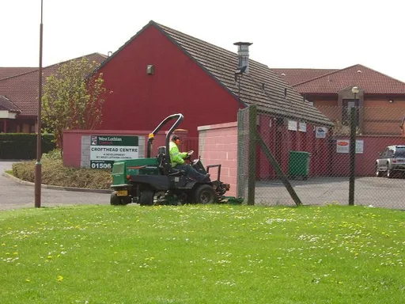
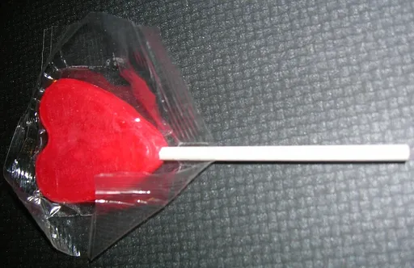
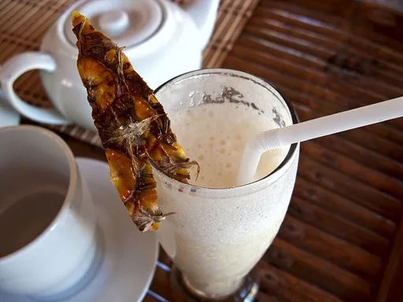

Reject an image by adding its slug to public/charades/charades-easy/reject.txt (append ! to keep it word-only), then re-run node scripts/genimages.mjs.

Lawnmower lawnmower CC BY-SA 2.0 · Richard Webb · source
Lightning lightning Public domain · Gabriel Loppé · source

Lollipop lollipop CC BY-SA 2.5 · unknown · sourceMarching marching CC0 · Wiki Farazi · sourceMicrophone microphone CC BY-SA 4.0 · Cecil; with permission of Nosturi-organiser Elmu ry · source

Milkshake milkshake CC BY 4.0 · Vyacheslav Argenberg · source